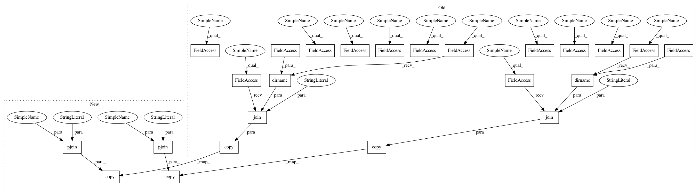

8c2ddb5b417754e42e15e96335b6b64bb6ac27fc,mltsp/tests/test_predict.py,,test_main_predict,#,155
Before Change
generate_model()
shutil.copy(os.path.join(os.path.dirname(__file__),
"data/dotastro_215153.dat"),
os.path.join(cfg.UPLOAD_FOLDER, "TESTRUN_215153.dat"))
shutil.copy(os.path.join(os.path.dirname(__file__),
"data/TESTRUN_215153_metadata.dat"),
cfg.UPLOAD_FOLDER)
shutil.copy(os.path.join(os.path.dirname(__file__),
"data/testfeature1.py"),
os.path.join(cfg.CUSTOM_FEATURE_SCRIPT_FOLDER,
"TESTRUN_CF.py"))
pred_results_dict = pred.predict(
os.path.join(cfg.UPLOAD_FOLDER, "TESTRUN_215153.dat"),
"TEMP_TEST01", "RF", "TEMP_TEST01",
metadata_file_path=os.path.join(cfg.UPLOAD_FOLDER,
"TESTRUN_215153_metadata.dat"),
custom_features_script=os.path.join(cfg.CUSTOM_FEATURE_SCRIPT_FOLDER,
"TESTRUN_CF.py"))
npt.assert_equal(
len(pred_results_dict["TESTRUN_215153.dat"]["pred_results_list"]),
3)
os.remove(os.path.join(cfg.UPLOAD_FOLDER, "TESTRUN_215153.dat"))
os.remove(os.path.join(cfg.UPLOAD_FOLDER, "TESTRUN_215153_metadata.dat"))
os.remove(os.path.join(cfg.FEATURES_FOLDER, "TEMP_TEST01_features.csv"))
os.remove(os.path.join(cfg.FEATURES_FOLDER, "TEMP_TEST01_classes.npy"))
os.remove(os.path.join(cfg.MODELS_FOLDER, "TEMP_TEST01_RF.pkl"))
os.remove(os.path.join(cfg.CUSTOM_FEATURE_SCRIPT_FOLDER, "TESTRUN_CF.py"))
After Change
generate_model()
shutil.copy(pjoin(DATA_PATH, "dotastro_215153.dat"),
pjoin(cfg.UPLOAD_FOLDER, "TESTRUN_215153.dat"))
shutil.copy(pjoin(DATA_PATH, "TESTRUN_215153_metadata.dat"),
cfg.UPLOAD_FOLDER)
shutil.copy(pjoin(DATA_PATH, "testfeature1.py"),
pjoin(cfg.CUSTOM_FEATURE_SCRIPT_FOLDER,
"TESTRUN_CF.py"))
pred_results_dict = pred.predict(
pjoin(cfg.UPLOAD_FOLDER, "TESTRUN_215153.dat"),
"TEMP_TEST01", "RF", "TEMP_TEST01",
In pattern: SUPERPATTERN
Frequency: 3
Non-data size: 24
Instances
Project Name: cesium-ml/cesium
Commit Name: 8c2ddb5b417754e42e15e96335b6b64bb6ac27fc
Time: 2015-04-15
Author: stefanv@berkeley.edu
File Name: mltsp/tests/test_predict.py
Class Name:
Method Name: test_main_predict
Project Name: cesium-ml/cesium
Commit Name: 8c2ddb5b417754e42e15e96335b6b64bb6ac27fc
Time: 2015-04-15
Author: stefanv@berkeley.edu
File Name: mltsp/tests/test_predict.py
Class Name:
Method Name: test_main_predict
Project Name: cesium-ml/cesium
Commit Name: 62f66d7fee4936de1d666338545b040131107def
Time: 2015-04-15
Author: stefanv@berkeley.edu
File Name: mltsp/tests/test_build_model.py
Class Name:
Method Name: test_build_model
Project Name: cesium-ml/cesium
Commit Name: 62f66d7fee4936de1d666338545b040131107def
Time: 2015-04-15
Author: stefanv@berkeley.edu
File Name: mltsp/tests/test_run_in_docker_container.py
Class Name:
Method Name: test_build_model_in_docker_container